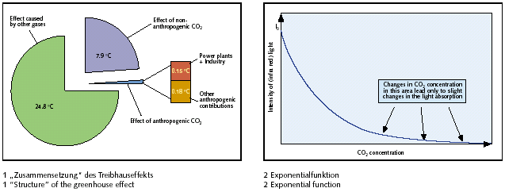

Bis auf ein skeptisches Editorial in einer wiss. Zeitschrift der Zementindustrie knüpfen die CO2-Emittenten recht eifrig mit an ihrem Strick. Hier das formidabel hellhörige Editorial aus ZKG INTERNATIONAL No. 7-2004 (Volume 57):
"Umsonst gehandelt - Was bringt Kyoto?
Liebe Leserinnen und Leser,
wissen Sie eigentlich, dass mit der aktuellen CO2-Diskussion eine Temperatursenkung der Atmosphäre von ca. 0,02 °C angestrebt wird? Sie glauben mir nicht? Lassen Sie uns doch mal nachrechnen:
Der gesamte Treibhauseffekt, d. h. die Temperaturerhöhung durch die klimarelevanten Gase in der Atmosphäre, soll bei 33 °C liegen. Man nimmt an,dass CO2 zu ca. 20 bis 25 % am Treibhauseffekt beteiligt ist. Der anthropogene, also "menschgemachte" Anteil am globalen CO2-Ausstoß liegt bei ca. 3 bis 4% (Bild 1).
Das erklärte Ziel des Kyoto-Protokolls und des Handels mit "Verschmutzungsrechten" ist eine Verringerung der CO2-Emissionen. Lassen Sie uns mal optimistisch annehmen, dass die in Kyoto geforderte weltweite Verringerung der anthropogenen CO2-Emissionen um 5% (bezogen auf 1990) gelingt. Das würde den gesamten globalen CO2- Ausstoß um 0,2% und damit rechnerisch den Treibhauseffekt um höchstens 0,05 % senken, d. h. um weniger als 0,02 °C.Der Anteil der Kraftwerke (insbesondere der fossil gefeuerten) an den anthropogenen CO2-Emissionen soll bei 25 % liegen, der der Industrie bei 20 %. Damit haben beide in Summe einen rechnerischen Anteil von 0,15 °C am Treibhauseffekt.
Man kann nun einwenden, dass bei diesen Rechnungen vereinfachend lineare Abhängigkeiten vorausgesetzt wurden. Die Abnahme der (Infrarot-)Lichtintensität in Folge von Absorption wird jedoch durch eine exponentielle Funktion mit negativem Exponenten beschrieben. Eine solche Funktion nähert sich asymptotisch dem Grenzwert Null und ändert sich bei größeren Abszissen-Werten kaum noch (Bild 2).Wissenschaftliche Untersuchungen deuten darauf hin, dass die absorbierende Wirkung von CO2 in einem Bereich liegt, in dem auch deutliche Änderungen der CO2-Konzentration kaum einen Einfluss auf die Infrarot-Absorption haben.
Im Klartext heißt das: Weder eine Senkung noch eine Steigerung der CO2-Konzentration wird demnach eine
entscheidende Wirkung auf den Treibhauseffekt haben. Der oben berechnete Wert von 0,02 °C Temperatursenkung
durch "Klimaschutz" ist demnach noch viel zu optimistisch.
In einer namhaften Tageszeitung war kürzlich zu lesen, es sei "weitestgehend wissenschaftlicher Konsens, dass
die Kohlendioxid- Emissionen als Maßnahme gegen den drohenden Klimawandel gesenkt werden müssen". Bei
einer Literaturrecherche stößt man jedoch auf zahlreiche widersprüchliche wissenschaftliche Veröffentlichungen
und die unterschiedlichsten Rechenmodelle zum Weltklima. Von einem Konsens kann gar keine Rede sein. Es
bestehen berechtigte Zweifel an den Aussagen von Klimaforschern, die den baldigen menschgemachten
Klimakollaps prophezeien und im gleichen Atemzug Fördergelder für ihre deshalb so sehr nötigen
Forschungsprojekte einfordern. Andererseits hat beispielsweise der Klimaforscher Professor Tom Wigley, Mitglied
im "Zwischenstaatlichen Ausschuss für Klimaänderungen" IPCC, bis zum Jahr 2050 eine globale Temperatursenkung
von 0,07 °C berechnet für den Fall, dass die Vorgaben des Kyoto-Protokolls erfüllt werden. Dieser Wert liegt
ungefähr in der Größenordnung des von mir berechneten Wertes und unterhalb der "globalen" Nachweisgrenze.
Das Problem der Industrie ist, dass keines dieser Argumente bei Politikern auf offene Ohren stößt. Der Zug
ist längst abgefahren, der Emissionshandel beschlossene Sache. Es gilt nun, zumindest die politischen
Entscheidungen über die Details, hier insbesondere die nationalen Allokationspläne, so zu beeinflussen, dass
Kostensteigerungen und der Verlust an Wettbewerbsfähigkeit möglichst gering gehalten werden. Jedoch wird sich
wohl kaum vermeiden lassen, dass durch die Zuteilung von "Verschmutzungsrechten" die derzeitigen
Marktverhältnisse "zementiert" werden. Gerade für die deutsche Zementindustrie hat das einen grotesk-ironischen
Aspekt:
Auf der einen Seite stehen immer noch kartellrechtliche Anschuldigungen im Raume. Auf der anderen Seite
wird der Emissionshandel nichts anderes bewirken als ein klassisches Kartell:
Wer besser als die Konkurrenz sein und mehr verkaufen (also auch mehr produzieren) will, wird bestraft. Damit
dürfte sich zukünftig jede kartellrechtliche Untersuchung erübrigen, denn aufgrund der staatlichen
Reglementierung sind unerlaubte Absprachen ohnehin nicht mehr nötig.
Ihr / Sincerely yours
Silvan Baetzner
Chefredakteur/Editor-in-Chief"

- hat aber gegen die Ökokriminellen logo nix gnutzt und das sogar trotz perfect english!:
Und US-Tusse Naomi Oreskes, die den Schwindel vom angeblichen wissenschaftlichen Konsens betr. menschengemachter Globalerwärmung mittels CO2-Ausstoß durch selektive Ausforschung von klimawissenschaftlichen Fachartikeln frech in die Welt fälschte darf trotz ihrer perfekten Widerlegung durch Benny Peiser, der ihre gefälschten Quellenangaben einfach mal nebenher überprüfte und dabei ihre perfide Selektionstechnik in aller notwendigen Eindeutigkeit entlarvte, darf freilich trotzdem weiter durch die Welt springen und für den staatlichen Klimaschutzterror als Meisterin der Massenmanipulation weitermachen. Auch im deutschen Auftrag, logo.